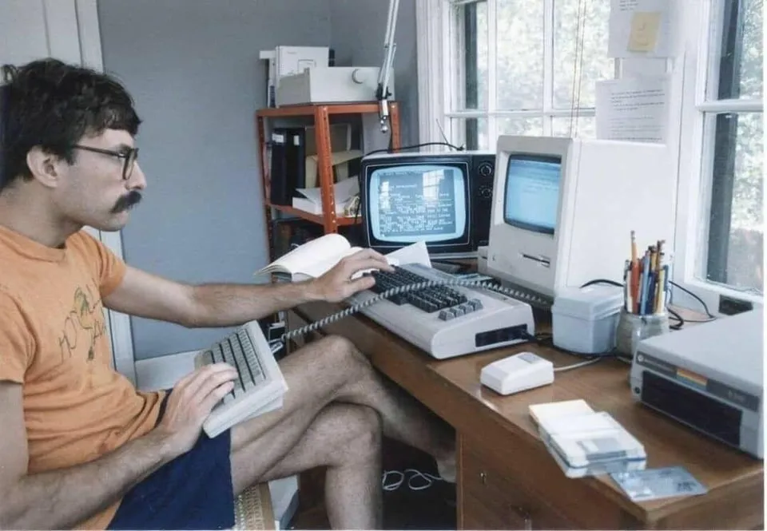

Kaptajn Bkool – til moderne e-cykling DM på retrostål og i uld – og finalepladsen der blev hacket…

I weekenden deltog Kaptajn Bjørnsteen i de første officielle danske mesterskaber i e-cykling nogensinde. Han kørte selvfølgelig på stål og i uld – og det blev til en officiel 19. plads. Eller blev det faktisk til en finaleplads blandt de 16 bedste? Og havde den russiske hacker Dimiti en finger med i spillet?
Få svar og muligvis flere spørgsmål længere nede i artiklen.
Det hører jo egentlig ingen steder hjemme: En 45 år gammel stål Colnago Super og en 53 årig Kaptajn for et retrocykelhold, der stiller op til officielt DM i e-cykling på Bkool-platformen. Og så alligevel!

– Jamen nogen skal jo holde det dér e-cykling i ørene, og ligesom sørger for, at de også husker cykelsportens historie. Ellers så løber det jo løbsk, lyder det fra Kaptajn Bjørnsteen.
– Og samtidig er det jo skide god træning.
Kvalifikation, 2 indledende løb og en russisk hacker
Selve e-cykling DM på Bkool var noget man skulle kvalificere sig til. Det skete hen over vinteren i en række online e-cykelløb. De 32 bedste kvalificerede sig til at køre selve DM i Gislevhallen på Fyn. For at gøre det lige for alle, skulle der benyttes ens hometrainere og computere. Først skulle der køres 2 indledende løb. Derefter skulle de 16 bedste dyste i et finaleløb.
– I det første løb, lagde jeg ret godt ud. Men efter godt 3 km kom der nogle stykker med 9 – 10 % stigning. Her havde Squadra Moltenis EDB-kyndige Jeppe Thiemer lavet en aftale med en russisk hacker om, at han skulle hacke sig ind på på min hometrainer, og skrue lidt ned for modstanden. Men der skete ikke en skid, afslører Kaptajn Bjørnsteen.

En plads i finalen
Kaptajnen kom dog igennem i sin lidt tunge 42-25 gearing, og sluttede på en 10. plads.
I andet løb var der lagt op til taktisk kørsel på en relativ flad rute. Her var der bestilt ekstra watt til de sidste 5 km. Men igen udeblev hjælpen fra den russisk hacker.
– Jeg havde dog håbet på en del flere watt, så jeg kunne have indhentet de to ryttere, der var kørt fra feltet. Men jeg ved sku ikke hvad Dimitri lavede, for jeg kunne ikke mærke ekstra energi. Heldigvis lå jeg godt med hele vejen, og vandt spurten i forfølgerfeltet, fortæller Bjørnsteen.

Med en 10. plads i første løb og en 3. plads i andet løb, var sensationen på plads. Kaptajn Bjørnsteen var i finalen ved danmarks første DM i nymodens e-cykling – på en 45 år gammel Colnago. Sådan!
Men så var det at Dimitri fik hul i gennem med sit 24 Kb modem…
Det der var en sikker 3. plads på Bkools resultatliste, blev under mystiske omstændigher og lang ventetid, og inden offentliggørelsen af de 16 ryttere der var gået videre til finalen, lavet om til en 9. plads på den officielle resultatliste! Og dermed var Kaptajn Bjørnsteen alligevel ikke i finalen.
Hvordan kunne det ske?

Cosa Nostra Carbon
– Jamen, det var jo tydeligt, at det var Cosa Nostra Carbon, der havde været inde og overbyde Dimitri, så han kunne manipulere med den officielle resultatliste. Større skandale er ikke sket siden Eddy Merckx blev smidt ud af Giro d’Italia for en forfalsket positiv urinprøve i 1969, fortælle Squadra Moltenis EDB-kyndige Jeppe Thiemer.
Kaptajn Bjørnsteen tager hele skandale med sindsro – og trækker lidt på skuldrene.
– Jeg kunne nok havde lavet en 14-15 plads i finalen. Men det kan jeg og Squadra Molteni ikke bruge til noget. Næste år går jeg efter sejren. Jacob Skovsgaard (den nykårede danmarksmester i Bkool, red) kan godt begynde at se over skulderen.

Foto: Claus Nilson & Peter N. Andersen